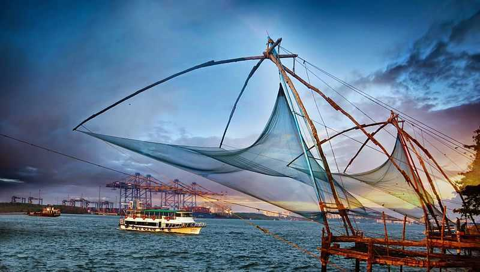
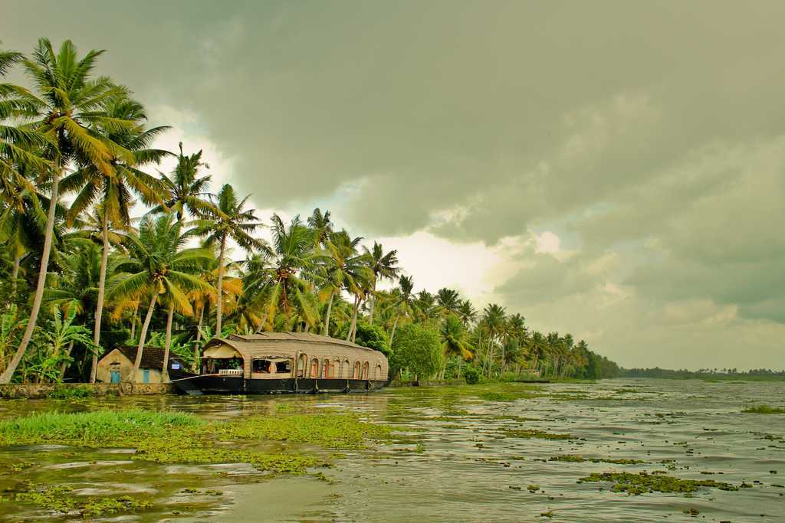
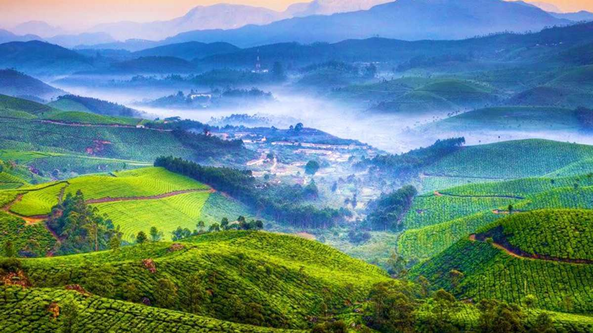
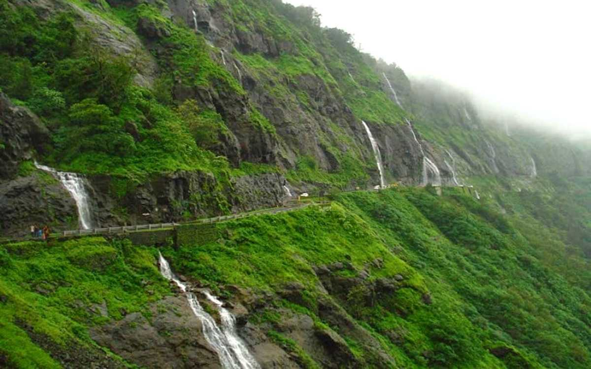

Famous for the tea estates, greenery, winding roads, blanket of mist, and viewpoints, Munnar is a hill station in Kerala, located in the Idukki district. Lying in the Western Ghats at 1600 metres, it is one of the most sought after and visited travel destinations globally, especially popular amongst honeymooners.
Officially called Alappuzha, Alleppey is known for its network of canals and lagoons with beautiful backwaters and the houseboats offering overnight stays. Located in the southern part of Kerala, the coastline of Alleppey offers some of the best beaches with water sports during the dry season.
Home to the country's largest Tiger Reserve- Periyar, Thekkady is an important tourist destination in Kerala. Periyar National Park, a major attraction, is where you can enjoy bamboo rafting in the catchment area of Mullaiperiyar Dam.

Lying on the Malabar coast in the southwest of India, Kochi or Cochin is a port city with a trading history that dates back to at least 600 years. Known popularly as the Queen of the Arabian Sea, the city is also Kerala's financial, commercial, and industrial capital.
Famous for its resorts and ayurvedic massage centres, Kovalam is a coastal town located around 13 km from Thiruvananthapuram in Kerala. The largest beach in Kovalam is the lighthouse beach that features a 30-metre tall lighthouse.

With emerald green waters flanked by lush vegetation, Kumarakom is an enchanting backwater destination situated 16km away from Kottayam in Kerala. Lying on the banks of Vembanad Lake, Kerala's largest lake, Kumarakom is a cluster of small human-made islands reclaimed from the lake.

The Periyar National Park in Thekkady, Kerala, is one of the most bio-diverse regions in the world and the best-protected reserve area that one can lay eyes on in India. Famous for its gorgeousness, greenery and stillness, the park is the dwelling place of abundant significant species, including the royal tigers and majestic elephants apart from other reptiles, fishes and birds.
Formerly known as Calicut, Kozhikode is located in Kerala. It was the Capital of Malabar during the Zamorin rule 500 years ago and is famous for its centuries-old trade in cotton and spices with Jews, Arabs, Phoenicians and Chinese.
The capital city of Kerala, Thiruvananthapuram or Trivandrum, is an appealing blend of a strongly rooted heritage and a nostalgic colonial legacy. Built upon seven hills, this city has long since left the days when it was only used by seafaring explorers behind - today, Trivandrum is an expensive metropolis with quaint urban charm and plenty of architectural and historical places to visit.

A lake with a legend of its own, greenest sceneries, waterfalls and tea plantations are what offer its charm to Devikulam, a hill station in Kerala. This quaint little hill-station located at an altitude 1800 m above sea level is best known for its mythical Sita Devi Lake, rolling hills, waterfalls and its innumerable tea and spice plantations.

Mundakayam is a beautiful taluk in the town of Kanjirapally, Kottayam. It's a land of rubber plantations and waterfalls situated 52km from Kottayam district. The town is also called as the Doorway to the Highranges in southern Kerala.
Located at a distance of about 55 kilometres from Kanyakumari, the cascading waters of the Tirparappu Falls make up for an enchanting sight. This waterfall is a manmade one and falls from a height of 50 feet.